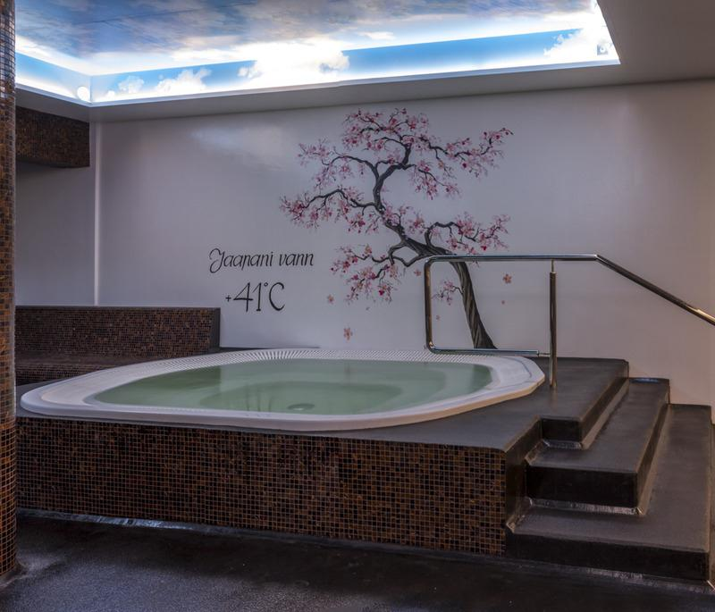

Saunakeskus
Saunaklubi pakub külalistele lõõgastavat puhkust saunaklubis.
Saunakeskuses on suurepärased saunad ja muud lõõgastamisvahendid.
->
Leilisaun 100С on kasulik kehale. Vähendab väsimust ja noorendab.

Leilisan 85 C on mõeldud nendele, kes ei kannata kõrget temperatuuri. Värskendab ja lõõgastub.

Aurusaun 60 C on väga kasulik. Aur puhastab nahka, parandab naha struktuuri, avab poorisid ja aitab higinäärmetel eritada kehast jääkaineid.

Sanaarium 55 C on lõõgastumissaun. Rahustab ja värskendab.

Jaapani vann 40 C lõõgastuv kuuma veega vann. Puhastab, noorendab ja värskendab.

Mullivann 33 C lõõgastuv soe vann koos veemassaažiga vann.

Saunaklubis on ka olemas väliterass, kus on kuuma õhuga iglusaun ja karastavalt jahedaga mullivann.

Oleme avatud iga päev!
E-K: 6:30-22:00
N-R: 9:00-23:00
L-P: 9:00-22:00
COVID19 haigusnähtudega isikul ei ole lubatud Guppy Aquapargi teenuste tarbimine. Guppy Aquapargi teenuste tarbimine ei ole lubatud klientidele, kes on olnud külastusele eelneva 14 päeva jooksul lähikontaktis COVID19 diagnoosiga isikuga või kellele on määratud isolatsiooni kohustus. Piletit ostes kinnitab klient, et tal ei esine mistahes COVID19 sümptomeid, ta ei ole olnud lähikontaktis COVID19 diagnoosiga isikuga ja tal ei ole isolatsiooni kohustust. Juhul, kui pärast pileti ostmist avastatakse kliendil COVID19 haigusnähud või selgub, et klient on olnud viimase 14 päeva jooksul COVID19 diagnoosiga isiku lähikontaktne või on isolatsiooni kohustusega, tuleb vastaval isikul ja tema lähikontaksetel Guppy Aquapargist viivitamatult lahkuda. Pileti maksumust ei hüvitata. Täname mõistmise eest.